Visitantes por año
Fuente: Parques Nacionales Naturales · Informes anuales de visitantes 2019, 2023 y 2024En 2024 las áreas protegidas con vocación ecoturística del país recibieron 1.336.862 visitantes; Los Nevados aportó cerca del 5 %.
ObservatorioAmbiental de TurismoCaldas
Conocimiento para un turismo que conserva y genera bienestar
Medir, comparar y mejorar la huella ambiental del turismo
Herramienta de autodiagnóstico del Observatorio. Prestadores turísticos, alcaldías y la Gobernación evalúan cómo su operación afecta el agua, la energía, los residuos y la biodiversidad del Paisaje Cultural Cafetero, y trazan su ruta de mejora con base en la evaluación de impacto ambiental.
Cada respuesta de las cartillas se traduce en agua más limpia, bosques conectados y especies que siguen siendo el mayor atractivo turístico del departamento.
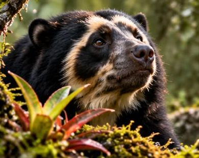
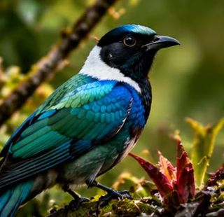
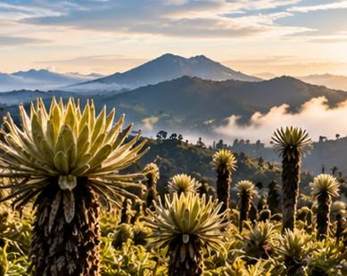
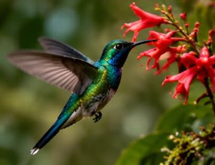
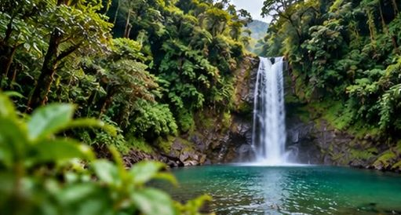
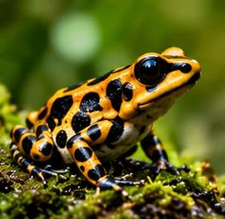
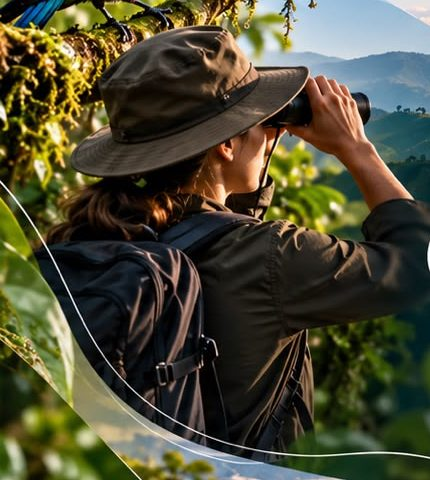
Las evaluaciones de impacto ambiental son mecanismos que sirven para identificar y analizar cuáles pueden ser los efectos ambientales que se pueden provocar al realizar un proyecto. Con este instrumento podemos ser más sostenibles y gestionar de una manera más eficaz los recursos, garantizando buenas prácticas para no dañar excesivamente al medio ambiente.
La importancia de realizar una eficaz evaluación de impacto ambiental ayudará a que se elijan trayectorias enfocadas a la sustentabilidad del plan, posibilitando la integración de cuestiones ambientales y generando condiciones beneficiosas para su progreso.
En Colombia la evaluación de impacto ambiental es un principio de la política ambiental desde la Ley 99 de 1993: los estudios de impacto ambiental son el instrumento básico para decidir sobre obras y actividades que afecten de manera significativa el medio ambiente natural o artificial.
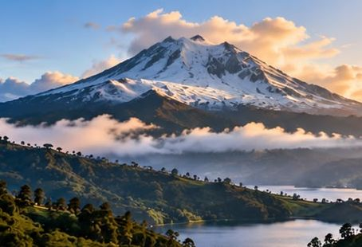
La finalidad de la evaluación es determinar cómo puede afectar, negativa o positivamente, el desarrollo de una acción empresarial en el medio ambiente y cómo minimizar los efectos negativos medioambientales que se puedan causar.
La huella medioambiental de una empresa se puede dejar en los ecosistemas que la rodean y puede afectar a la salud humana.
Los sistemas de gestión ambiental basados en la norma ISO 14001 convierten esa evaluación en un ciclo permanente: identificar aspectos e impactos, fijar objetivos, actuar, medir y mejorar. Las cartillas de esta herramienta siguen la misma lógica y toman indicadores de ISO 14001, GRI 300 y las normas técnicas sectoriales de turismo sostenible de Colombia (NTS-TS 001-1 y NTS-TS 002).
En la práctica colombiana, un estudio de impacto ambiental incluye la descripción del proyecto, la caracterización del área de influencia (medios abiótico, biótico y socioeconómico), la zonificación ambiental, la demanda de recursos naturales, la evaluación de impactos, el Plan de Manejo Ambiental, el plan de seguimiento y monitoreo, el plan de contingencia y el plan de cierre.
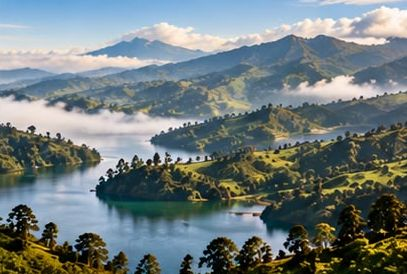
Para realizar una buena evaluación de impacto hay que elaborar varios documentos técnicos que realizarán predicciones de previsibles impactos ambientales del proyecto. Los efectos sobre los aspectos ambientales pueden ser:
Una vez realizada la evaluación de impacto ambiental tendrá que hacerse un seguimiento ambiental para vigilar su eficacia. Este seguimiento analizará si se están cumpliendo las medidas preventivas recogidas en el estudio de impacto ambiental.
Ruta del licenciamiento ambiental en Colombia
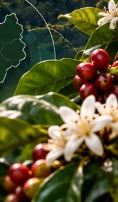
La mayoría de hoteles, fincas, restaurantes, alcaldías y dependencias públicas no tramitan una licencia ambiental, pero todos consumen agua y energía, generan residuos y vertimientos e intervienen la biodiversidad. El autodiagnóstico lleva la lógica de la evaluación de impacto a esa escala: identificar dónde está el impacto, reconocer lo que ya se hace bien y priorizar las acciones que más reducen el daño.
Esta herramienta aplica las cartillas HUELLA VERDE de CORPOCALDAS para establecimientos turísticos y HUELLA VERDE TERRITORIAL para alcaldías y la Gobernación de Caldas. Cada respuesta se califica en una escala de 0 a 2, cada módulo tiene un peso y el resultado ubica a la entidad en uno de cuatro niveles con un plan de acción propio.
Con cada cartilla diligenciada el sitio sintetiza el comportamiento ambiental de la entidad: en qué dimensiones actúa de forma consolidada, dónde tiene prácticas a medio camino, qué riesgos normativos aparecen y cuáles son las tres acciones con mayor efecto para su nivel.
Del páramo al cafetal, del nevado al embalse: el turismo de Caldas depende del agua y de la biodiversidad.
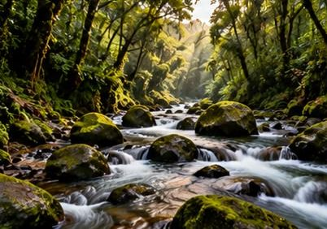
Para acceder a normativa vigente el Ministerio pone a disposición de los usuarios el siguiente enlace: Legislación sobre evaluación ambiental, BOE legislación consolidada, Ley 21/2013, de 9 de diciembre, de evaluación ambiental (España). Para entidades en Colombia aplica el siguiente marco:
Derecho a un ambiente sano y deber del Estado de planificar el aprovechamiento de los recursos naturales.
Crea el Ministerio de Ambiente y el SINA, regula la licencia ambiental (Título VIII) y el 1 % para áreas de acueductos (art. 111).
Decreto Único Reglamentario del sector ambiente: licencias, permisos de vertimientos, PUEAA y demás trámites.
La ANLA licencia los proyectos de competencia nacional; las CAR evalúan, otorgan permisos y hacen seguimiento en su jurisdicción.
Procedimiento sancionatorio ambiental: medidas preventivas y sanciones por infracciones.
Turismo sostenible, reducción de plásticos de un solo uso y gestión del riesgo de desastres.
Referente europeo de la evaluación ambiental estratégica y de proyectos (BOE, legislación consolidada).
Estándares de gestión y reporte ambiental en los que se basan los indicadores de las cartillas.
Elija el instrumento, registre los datos de la entidad y marque la opción que describe la situación actual, no la deseada. El puntaje se calcula mientras responde.
Cada tarjeta es una cartilla diligenciada. Seleccione una para ver su perfil de comportamiento, sus fortalezas, brechas, riesgos normativos y acciones prioritarias.
Resultados agregados de todas las cartillas guardadas y síntesis de las tres cartillas aportadas.
Datos públicos sobre áreas protegidas, biodiversidad, visitantes y ocupación. Cada cifra indica su fuente y su fecha; se actualizarán con los reportes institucionales del Observatorio.
En 2024 las áreas protegidas con vocación ecoturística del país recibieron 1.336.862 visitantes; Los Nevados aportó cerca del 5 %.
Cerca del 80 % de los hoteles de Manizales cancelaron reservas tras el sismo. Menos de dos meses después, alrededor del 95 % de la actividad turística y comercial de la ciudad había vuelto a operar, con el café, las orquídeas y el aviturismo como motores de la recuperación.
Fuente: EFE, con datos de la Alcaldía de Manizales y Cotelco Caldas (9 oct. 2026)Aviturismo, alta montaña, termalismo, senderos entre palmas de cera y ríos del Magdalena Caldense. Un inventario inicial construido con fuentes públicas, que el Observatorio irá ampliando con los prestadores y municipios.
Manizales
Bosque de niebla y principal fuente de agua de Manizales. Hábitat de la perdiz pechicastaña, el tororoi de Miller y la cotorra montañera; los comederos atraen colibríes como el silfo coliverde. Guías locales reportan más de diez especies endémicas.
Tenga en cuenta: Ingreso con guía y reserva previa. Ideal muy temprano en la mañana.
Fuente: Radio Nacional · Lugares de avistamiento en Caldas · Celebrate Urban Birds · Aves de Río Blanco y Manizales · EFE · Café y naturaleza tras el sismo (oct. 2026)
Manizales
Bosque de niebla a las afueras de la ciudad, con casa de colibríes, observatorio de mariposas y sendero de bonsáis. Uno de los puntos de avistamiento más reconocidos del departamento.
Tenga en cuenta: Recorridos guiados; buen plan para familias.
Fuente: Radio Nacional · Lugares de avistamiento en Caldas · El Tiempo · Caldas es natural (ene. 2025)
Manizales
Parque urbano con senderos y bosque, reconocido como sitio de avistamiento dentro de la ciudad, donde se han registrado unas 80 especies de aves en el área urbana.
Tenga en cuenta: Acceso desde la ciudad; útil para iniciarse en el aviturismo.
Chinchiná · vereda La Esmeralda
Bosque y cuerpo de agua en la zona cafetera, incluido entre los sitios de avistamiento del departamento.
Tenga en cuenta: Combínelo con una visita a fincas cafeteras de la zona.
Villamaría
Sendero junto al río Claro, en la vía hacia la alta montaña, registrado como sitio de avistamiento de aves.
Tenga en cuenta: Lleve ropa impermeable: la zona es lluviosa y fría.
Manizales
Fincas del Paisaje Cultural Cafetero que suman café, cacao y rutas de fotografía y avistamiento de aves. Hacienda Venecia cuenta con unas 300 ha de café y cacao.
Tenga en cuenta: Reserve con anticipación; muchas ofrecen alojamiento rural.
Fuente: EFE · Café y naturaleza tras el sismo (oct. 2026) · El Tiempo · Caldas es natural (ene. 2025)
Villamaría · PNN Los Nevados
Entrada principal al parque desde Caldas, a 1 h 30 min de Manizales. Paisaje de páramo y arenales a más de 4.400 m, con vista a la fumarola del cráter Arenas. Según la guía de 2026, es el punto máximo permitido para visitantes no especializados.
Tenga en cuenta: Consulte el nivel de alerta del volcán (Servicio Geológico Colombiano) y los cierres programados de Parques Nacionales antes de ir. Regístrese en el puesto de control.
Fuente: Guía para visitar el Nevado del Ruiz en 2026 · El Tiempo · Caldas es natural (ene. 2025) · Occidente · Reapertura de Los Nevados (dic. 2025)
Vía al Nevado del Ruiz
Recorrido de madrugada para ver salir el sol sobre la silueta del «León Dormido», en la alta montaña del Ruiz; suele combinarse con un baño en aguas termales.
Tenga en cuenta: Salida antes del amanecer, con ropa térmica.
Caldas, Risaralda, Quindío y Tolima
58.300 ha de nieves, páramos, lagunas de alta montaña y frailejones. Hábitat del colibrí de páramo y del perico de los nevados. Las rutas a Santa Isabel o al Tolima requieren permisos y guía certificado.
Tenga en cuenta: Las rutas expertas exigen aclimatación, equipo técnico y seguro médico.
Fuente: Colombia Travel · PNN Los Nevados · Guía para visitar el Nevado del Ruiz en 2026 · Radio Nacional · Lugares de avistamiento en Caldas
San Félix · Salamina
Paisaje de páramo con frailejones en las montañas de San Félix, cerca del valle de palmas de cera de La Samaria.
Tenga en cuenta: Combínelo con la visita al Valle de la Samaria.
Vía Manizales–Nevado del Ruiz
Complejo de aguas termales con hotel y spa, alimentado por la actividad volcánica del Nevado del Ruiz. Uno de los destinos termales más conocidos de la zona.
Tenga en cuenta: Reserve el acceso a piscinas o el plan de spa.
Fuente: La República · Destinos de aguas termales · Blu Radio · Escapada a Caldas (oct. 2026)
A 5 minutos de Manizales
Aguas que brotan a unos 65 °C, calentadas por el Nevado del Ruiz, y llegan a las piscinas a 35–40 °C. En el Paisaje Cultural Cafetero, junto al PNN Los Nevados.
Tenga en cuenta: Plan de medio día; ideal al regreso de la alta montaña.
Villamaría · a 54 km de Manizales
Hotel con piscina termal al aire libre en la alta montaña, rodeado de páramo y bosque altoandino.
Tenga en cuenta: Clima frío: lleve abrigo para salir de las piscinas.
Villamaría
Corredor de aguas termales azufradas que nacen en el PNN Los Nevados, para nadar o descansar.
Tenga en cuenta: Hidrátese bien y limite el tiempo en el agua caliente.
San Félix · Salamina
Uno de los bosques de palma de cera más grandes y mejor conservados de Colombia, a más de 2.800 m, con palmas centenarias y hábitat del loro orejiamarillo. La comunidad lo protege con reforestación y un programa de padrinazgo: por cada palma apadrinada se siembran al menos cinco.
Tenga en cuenta: Desde Salamina, jeep Willys a San Félix (1 h) y luego camino destapado. En temporada de lluvias la vía se complica.
Fuente: Colombia One · La Samaria, alternativa al Cocora (jul. 2025)
Norcasia
Aguas color verde esmeralda en el Magdalena Caldense, con pesca deportiva, cascadas, torrentismo y avistamiento de aves.
Tenga en cuenta: Contrate operadores locales registrados para las actividades en el agua.
Norcasia
Recorrido de más de siete kilómetros de body rafting, donde se pueden ver monos aulladores. El río atraviesa también Pensilvania, Marquetalia, Victoria, Samaná y La Dorada.
Tenga en cuenta: Use chaleco y casco; solo con guía.
La Dorada
Recorridos por el río que cuentan la historia del puerto y la vida ribereña del Magdalena Caldense.
Tenga en cuenta: Clima cálido: protector solar e hidratación.
Mida su huella ambiental con la cartilla Huella Verde y aparezca en los resultados del Observatorio.